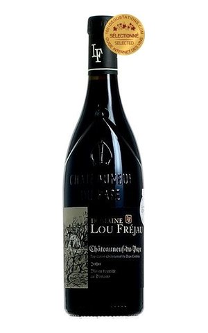
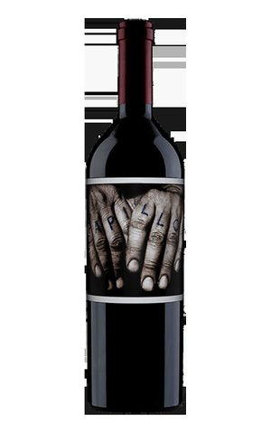

인원과 예산만 알려 주세요.
와인부터 잔까지 맞춰 드릴게요
송년회, 동호회 정모, 회사 워크숍, 비즈니스 모임. 몇 병이 필요한지, 예산 안에서 어떤 와인을 고를지, 잔은 어떻게 할지까지 한 번에 정리해 드려요.
한 병은 5~6잔,
자리에 따라 이렇게 잡아요
| 자리 | 추천 비율 | 20명이면 |
|---|---|---|
| 식사 중심, 건배와 한두 잔 | 2~3명에 1병 | 7~10병 |
| 식사와 대화가 길어지는 자리 | 2명에 1병 | 10병 |
| 와인이 주인공인 모임·파티 | 1명에 1병 | 20병 |
건배는 스파클링으로 시작해서 화이트로 가볍게 이어가다가, 메인 요리가 나올 때 레드로 마무리하는 흐름이 가장 무난해요.
인원별로 이렇게 짜 드려요
모임 성격에 맞춰 짠 예시예요. 가격은 카톡으로 안내드리고, 잔 대여는 따로 안내드려요. 예산과 취향, 음식에 따라 구성은 얼마든지 바꿔 드려요.
- 마리 드메 뀌베 19세기 샴페인1
- 피에르 아르망 마콩 빌라주2
- 조나단 세갱 부르고뉴 피노 누아 VV2
- 그랜드 바로사 까베르네 소비뇽1
- 세디치 브뤼 스푸만테2
- 샤또 드 말리니 샤블리3
- 타라파카 그란 레세르바 까베르네 소비뇽3
- 그랜드 바로사 까베르네 소비뇽2
- 바론 도베른 그랑 크뤼 샴페인3
- 샤또 드 말리니 샤블리3
- 루 프레조 샤토뇌프 뒤 파프3
- 오베하 네그라 그란 레세르바3
- 바론 도베른 그랑 크뤼 샴페인4
- 피에르 아르망 마콩 빌라주4
- 프로두토리 델 바르바레스코4
- 오린 스위프트 파피용4




부담 없는 데일리 와인으로 인원을 넉넉히 맞추거나, 보르도 그랑 크뤼·빈티지 샴페인으로 더 특별하게 짜는 것도 돼요. 예산만 알려 주세요. 와인 목록 보기 →
와인만이 아니라 자리 전체를
- 인원만큼 와인잔을 빌려 드리고, 행사가 끝나면 수거해요. 플라스틱 컵에 마시는 와인은 그 맛이 안 나니까요.
- 1인 1병과 2인 1병, 잔 포함과 잔 미포함처럼 두세 가지 견적을 나란히 드려요.
- 행사장으로 배송해 드리고, 매장 픽업도 돼요.
- 원하시면 자리에서 와인을 짧게 소개해 드려요. 와인 매너 미니 클래스도 가능해요.
- 회사·단체는 세금계산서를 발행해 드려요.
- 단 와인이 싫다, 묵직한 레드가 좋다 같은 취향을 알려 주시면 구성에 반영해요.
많이 물어보시는 것
송년회 와인은 몇 병 준비하면 되나요?
한 병(750ml)은 5~6잔이 나와요. 식사 중심으로 건배와 한두 잔이면 2~3명에 1병, 식사와 대화가 길어지는 자리면 2명에 1병, 와인이 주인공인 모임이면 1명에 1병으로 잡아요. 땡큐와인 구성 예시로는 25명 송년회에 10병, 40명 송년회에 16병을 준비해요.
모임 와인은 어떤 순서로 내면 좋나요?
건배는 스파클링으로 시작해서 화이트로 가볍게 이어가다가, 메인 요리가 나올 때 레드로 마무리하는 흐름이 가장 무난해요. 단 와인이 싫다, 묵직한 레드가 좋다 같은 취향을 알려 주시면 구성에 반영해요.
행사 때 와인잔도 빌릴 수 있나요?
네. 인원만큼 와인잔을 빌려 드리고 행사가 끝나면 수거해요. 잔 포함과 잔 미포함 견적을 나란히 드리니 비교해 보고 정하시면 돼요.
행사장으로 와인을 배송해 주나요?
네. 행사장으로 배송해 드리고, 성수동 매장 픽업도 돼요. 원하시면 자리에서 와인을 짧게 소개해 드리고, 와인 매너 미니 클래스도 할 수 있어요.
견적은 어떻게 받나요?
가입 없이 견적 요청 폼이나 카카오톡으로 인원, 날짜, 장소, 예산을 알려 주세요. 영업일 하루 안에 1인 1병과 2인 1병처럼 구성 두세 가지와 견적을 보내 드려요. 회사·단체는 세금계산서를 발행해 드려요.
가입 없이 남겨 주세요
영업일 하루 안에 구성 두세 가지와 견적을 보내 드려요. 받아 보고 정하셔도 돼요.
폼이 번거로우시면 카톡으로 인원·날짜·예산만 보내 주셔도 돼요. 문의하기